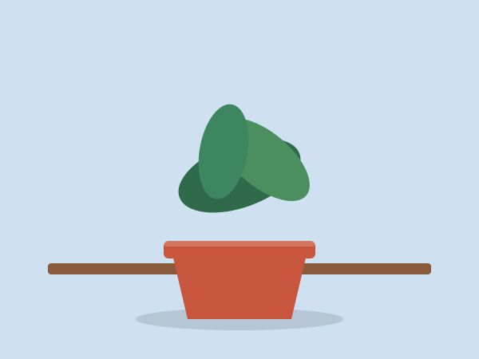
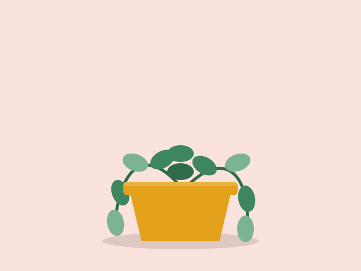
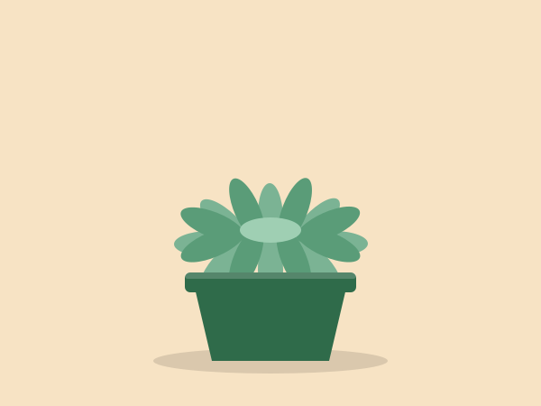
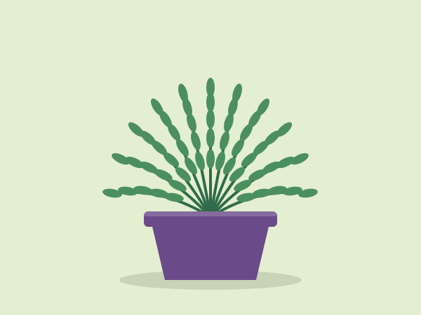

Water
Check the top 2 cm of soil. If it is dry, water until it drains from the bottom.
Leaf Desk
Three habits keep most desk plants healthy.
Check the top 2 cm of soil. If it is dry, water until it drains from the bottom.
Place plants near a window. Turn the pot a quarter turn each week so growth stays even.
Always use a pot with a drainage hole and a saucer to catch extra water.



